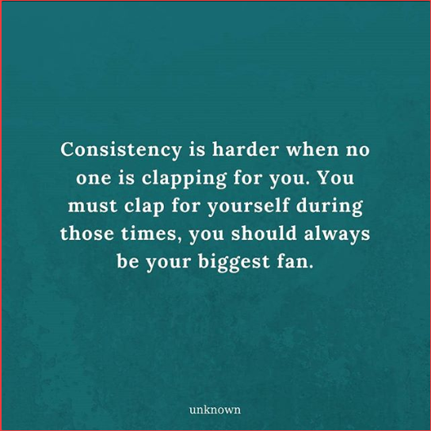
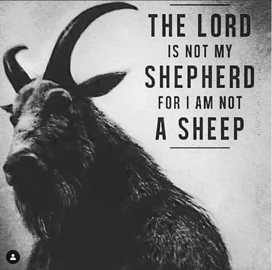

Keep Going

When you look back on your life you should look back and see all you have done and the person you become; not the regrets of things you passed on because you let fear hold you back. Recently I made the choice to join this program, as terrifying as it is to start something new, at what feels like so late in life, here I am starting again.
In my youth I let fear stop me from pursuing anything that brought me joy. I let it keep me from track and from asking out the people that I liked. Fear was my ever-constant companion, the bully in my life that made me doubt kindness and joy; made me see an underlying motive where using me was the best option for others to gain something.
As an adult looking back, I wish I could say it was all in my head, that the bully had no foundation in the reality, but that would only be a partial truth. While most of what I told myself were lies forced upon me by internalized fat phobia, gender shaming and sexual confusion, some of it was real. Broken homes don’t usually lead to solidified adults. Some of the reasons why I was the way I was had more to do with the life I was living at the time. School, home, caring for my younger siblings. So much of my childhood stolen from me by those claiming to be “doing the best they could.” They clipped my wings and cemented my roots in fear. Their toxicity poured over me like rainwater, and I was never told I could have an umbrella.
So, when it came the time for me to move forward into the light of adulthood, I was blinded and confused. No direction, no clues as to what I was supposed to do next. When bombarded by the light, drowning in a sea of fear it was easy to float, easy to sink, easy to give over the flesh to the darkness it had grown in. It was easier to want to let go rather then build a new self from the sand and sticks I found scattered around this newfound life.
Day after painful day I fought a losing battle against the burning pain of this new light. Till one day it came to pass. The peak all like me face, when the choice of do I stay or do I go has to be made. When it came to it I couldn’t leave yet, for the first time in my life I felt like if I did I would miss something. Something more than parties I didn’t get invited too. More than dances I didn’t have a date too. Something far greater than the sad overwhelming pain that had been my life that far.
Today I know more then I did. I met the little girl who I was meant to bring into this world, and the little boy who blessed his family because he had a place to start in me. I met the people who would show me what it is like to have people show up, to forgive you when you fail, and to celebrate the little things that make you happy. I have seen the benefit of learning something new and fighting to never stop learning.
Who Else Would You Be?

There isn’t really one day that you come out. There is a series of days when you come out to yourself, look for answers and solidify over and over who you are vs who you are told to be.
Many times, you come out in small ways over the years. Your style of dress, the way you daydream, when you are alone practicing saying it out loud in the mirror.
You imagine the look on your mom’s face, the paling of your father’s. The farce of your sister as she pretends its her news to tell the world, so they no longer look at you the same. The pain of your brother shoving you against a locker because that is what his friends have been doing to the rainbow children all day and he knows you wont report him to the principal because you have to go the same home as his after school.
Every boyfriend thinks its sexy till he realizes it isn’t going to get him extra partners, every girl openly worries you will “switch back.” You live in the lonely middle ground where your word isn’t trusted and its easier to not be honest with anyone.
You call your self the names they want to label you with in the moment because its easier than trying to explain what others don’t want to understand. The boxes, the labels, the cuffs of shame chain you down and force feed you the dialog that makes them comfortable until its all you can bring up.
One day though you remember the young face in the mirror, hidden but freed. Inside their own skin for the first time framing the words that seem seared upon their soul like a memory from lives past. Somehow this secret self-connection making the pain of confusion ease like ice on a bruise.
Some never free themselves from the chains, the weight pulling them down and crushing them on the stones of societies demands. Others truly live as themselves and are destroyed by the cowards of hate who let their ignorance run their mouths and their own sexual conflicts and demands justify the taking of those lives. Some come into the light of life outside the closet and are met with so much hate that they lose the hope that lead them out the door to begin with.
For some the coming out isn’t the hard part, it’s the easy part. What is hard is what comes next, some inside their control some not. All felt upon the same soul that was compelled to say those words to another and let it be written in the tomes of life.
No matter the stage you find yourself, it is never too early or late to live a life in the light of who you are, or to love the one(s) you are meant to.
Fighting the Boxes of "Normal"

“Being normal is vastly overrated.”- Halloween Town
“If you are always trying to be normal you will never know how amazing you can be” – Maya Angelou
“Why fit in when you were born to stand out!” – Dr. Seuss.
We concern ourselves with this word “normal” like it is the answer to all that is wrong with us. As we grow older many of us lose connection with the word, living lives based more off the things that make us happy. In the book “The Awakening” by Kate Chopin, a woman gives up her mundane and socially perfect life for one of self-indulgence. She is seen as an outlier and ill, and slowly is driven to the end of her rope.
Normal things like BMI and body type plague people from birth. Doctors chart you on a scale and tell your parents if they are doing well enough on your behalf. They score your growth, check the boxes and place the milestones. Once your body takes over and does as it will society takes over and crushes us with images and propaganda telling us all the conflicting normal demands.
We all bare the brunt of being told how to look, act, talk, walk. What to wear, when to take it off, why you should put it on, when you are to old or to young for that style anymore no matter the joy it brings you. Teach children shame, burn it into them like branded letter, always there no matter what they do, nagging away till doubt plagues their every action.
There are shows dedicated to making the odd conform to the norms of the society to show them that they too can fit in. To try and bend them into the boxes that provided anyone but themselves pleasure upon looking them over. Make them look respectable, rather than just respecting them because they deserve to be.
We showcase people with deformities, disabilities, struggles. We alter them, change them, put them on display. Call their changes triumphs but never celebrate anything about them that came before looking like Jillian Michaels thinks you should.
We overlook those who move easy and endure because the scale says we should. We demand models look sickly so not everyone can be one, tell short girls they can never be as graceful because they take too many steps. We discount the child who loves to sing because they aren’t imbued with the angelic vibrato right away.
We crush dreams and wash them away with the tears of defeat.